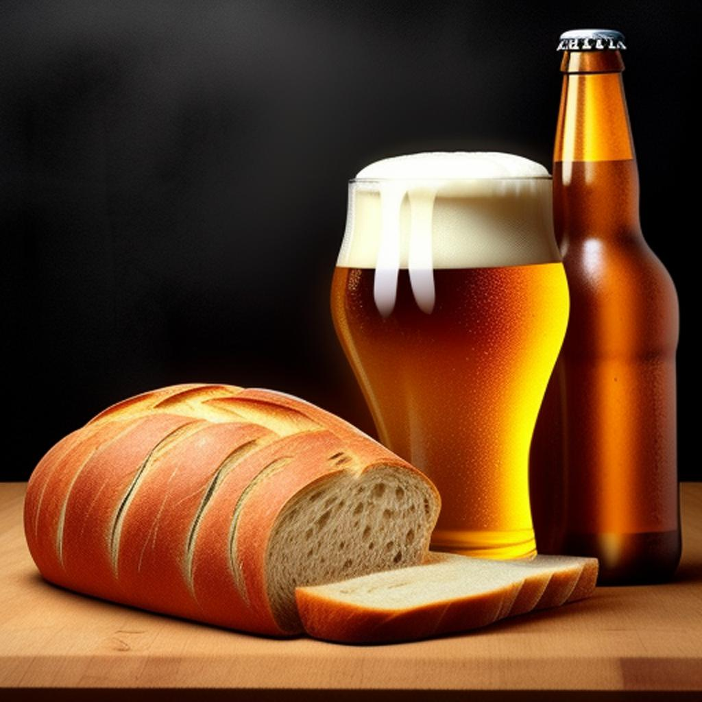

BreadConcept
Resumen Ejecutivo: PanBrew es un proyecto innovador que busca transformar los residuos de pan en deliciosas cervezas galardonadas. Nuestra iniciativa está inspirada en el éxito de Toast Ale y se compromete a abordar el creciente problema del desperdicio de alimentos mientras contribuye a la protección del medio ambiente. Objetivo: Nuestro objetivo principal es reducir significativamente el desperdicio de pan al utilizarlo como ingrediente principal en la producción de cerveza. Esto nos permitirá no solo crear cervezas excepcionales, sino también contribuir a la conservación de recursos naturales y la reducción de emisiones de carbono asociadas a la producción de cebada virgen. Beneficios Clave: Reducción del desperdicio de alimentos, aprovechando el 44% del pan que se desperdicia. Contribución a la conservación de tierra y agua al reducir la demanda de cebada virgen. Mitigación de emisiones de carbono al evitar la producción adicional de cebada. Apoyo a organizaciones que trabajan para mejorar el sistema alimentario. Productos: Ofreceremos una variedad de cervezas, desde cerveza artesanal hasta sesión IPA, para satisfacer los gustos de todos los amantes de la cerveza. Cada cerveza de PanBrew será una combinación única de sabor y sostenibilidad. Impacto Social y Ambiental: PanBrew se compromete a ser una empresa socialmente responsable. Destinaremos una parte de nuestras ganancias a organizaciones que luchan por mejorar el sistema alimentario y reducir el desperdicio de alimentos, contribuyendo así a un mundo más sostenible. Conclusión: PanBrew es más que una cerveza; es una forma de hacer un brindis por un mundo mejor. Únete a nosotros en este emocionante viaje para disfrutar de cervezas deliciosas y al mismo tiempo combatir el desperdicio de alimentos y proteger nuestro planeta. ¡Salud al futuro sostenible con PanBrew!
